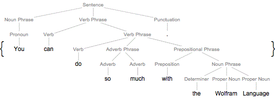

Những bài toán
Hiểu ngôn ngữ tự nhiên (Natural language understanding)
-
Hiểu ngôn ngữ tự nhiên (Natural language understanding - NLU) là một bài toán trong lĩnh vực Xử lý ngôn ngữ tự nhiên. NLU có liên hệ mật thiết tới công nghệ Đọc hiểu của máy (Machine reading comprehension).
-
NLU là một bài toán AI-khó.
- Quá trình phân rã và phân tích input của bài toán NLU diễn ra rất phức tạp bởi sự xuất hiện ngoài ý muốn những yếu tố mơ hồ. Sự nhập nhằng đó dẫn tới nhu cầu phải tìm ra chính xác công thức ngữ pháp và ngữ cảnh phù hợp để áp dụng vào việc dự đoán nghĩa của input - yếu tố tiên quyết phải xác định được để cho ra output của bài toán.
-
NLU mang lại những lợi ích thương mại rất đáng kể nhờ vào những ứng dụng hữu ích và thiết thực của nó: Thu thập tin tức (news-gathering), Phân loại văn bản (text categorization),...

Sinh ngôn ngữ tự nhiên (Natural language generation)
-
Sinh ngôn ngữ tự nhiên (Natural language generation - NLG) cũng là một bài toán trong lĩnh vực Xử lý ngôn ngữ tự nhiên. Hệ thống NLG là một công cụ phiên dịch sự biểu diễn bằng ngôn ngữ máy (chẳng hạn như các biểu thức logic) sang sự biểu diễn bằng ngôn ngữ tự nhiên.
-
Bài toán NLG có thể được xem là đối nghịch với bài toán hiểu ngôn ngữ tự nhiên (NLU): Trong khi NLU nhận vào input là một đoạn văn bản bằng ngôn ngữ tự nhiên và nhiệm vụ nó làm là biểu diễn lại văn bản đó dưới dạng ngôn ngữ máy, thì một hệ thống NLG lại cần phải diễn giải một ý niệm trong máy tính thành lời văn.
-
Hệ thống dự báo phấn hoa cho Scotland là một ví dụ đơn giản về một hệ thống NLG. Hệ thống này nhận vào input 6 số nguyên dự báo lượng phấn hoa cho các vùng khác nhau ở Scotland. Từ những số liệu đó, hệ thống sinh ra output là một văn bản thông báo về lượng phấn hoa. Chẳng hạn như vào ngày 01/07/2005, phần mềm đã đưa ra thông báo sau đây: "Lượng phấn hoa vào ngày thứ sáu đã tăng từ mức vừa phải lên mức cao với giá trị vào khoảng 6 hoặc 7 tại hầu hết những vùng trên cả nước. Tuy nhiên, tại những vùng ở phía Bắc, lượng phấn hoa chỉ ở tầm vừa phải với giá trị là 4."
-
Các giai đoạn thực hiện NLG bao gồm: Xác định nội dung (Content determination), Xây dựng cấu trúc văn bản(Document structing), Kết hợp (Aggregation),Lựa chọn từ ngữ (Lexical choice), Sinh ra các biểu thức sở chỉ (Referring expression generation) và cuối cùng là Hiện thực hóa (Realisation).